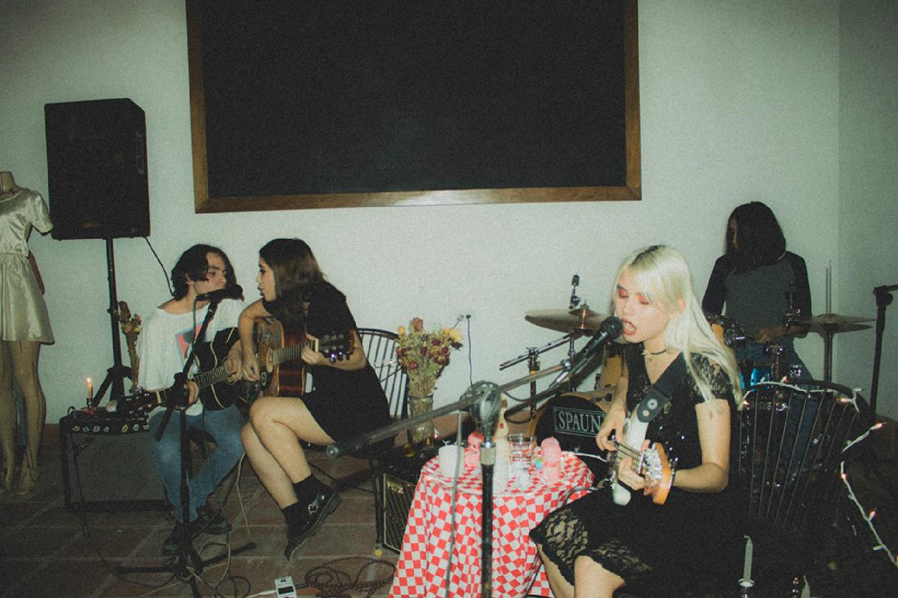
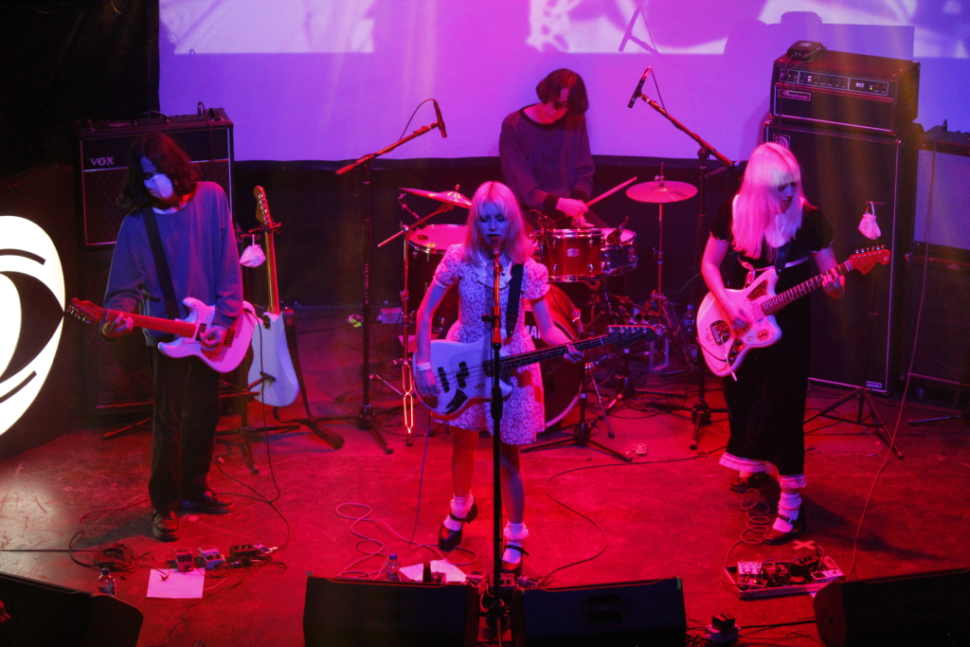

MARGARITAS PODRIDAS
En 2017, la banda lanzó su primer sencillo "El Show de Truman", que fue muy bien recibido por la crítica. Desde entonces, Margaritas Podridas ha lanzado dos sencillos más, "Los Días Azules" en 2018 y "Ceremonia" en 2020. La banda ha actuado en vivo en diversos conciertos y festivales en todo México, ganando una gran cantidad de seguidores en el camino. Han colaborado con otros músicos y bandas en la escena independiente, lo que ha ayudado a consolidar su posición en el panorama musical de México. El futuro de Margaritas Podridas parece muy brillante y emocionante, y se espera que sigan entregando música de calidad y emocionante a sus fans tanto en México como en el extranjero. Con su estilo único y su pasión por la música, Margaritas Podridas está destinada a ser una de las bandas más importantes de la escena musical independiente de México en los próximos años.
Margaritas Podridas es una banda de rock alternativo de Hermosillo, Sonora, México. La banda estuvo integrada por Carolina Enríquez (bajo y voz), Moisés Ruiz (guitarra), Rafael Arámburo (guitarra) y Moisés Luna (batería). Originalmente conocida como Rotten Daisies, la banda se inspira en el movimiento grunge de los 90 y combina elementos de shoegaze, noise y punk en su música.
Las letras de la banda están en español y, a menudo, exploran temas de amor, pérdida e introspección. En 2020, lanzaron su álbum debut homónimo "Margaritas Podridas". El álbum presenta once pistas, incluidas las populares canciones "Polaroid" y "Ella Se Fue". La banda ha ganado seguidores en México a través de sus presentaciones en vivo en festivales y lugares, así como a través de las redes sociales y plataformas de transmisión de música. Margaritas Podridas ha sido elogiada por su sonido crudo y emotivo, así como por su combinación única de géneros. La música de la banda ha sido descrita como "hipnótica", "intensa" y "poderosa". Han hecho comparaciones con otros actos de rock alternativo como Radiohead, The Smashing Pumpkins y Sonic Youth.